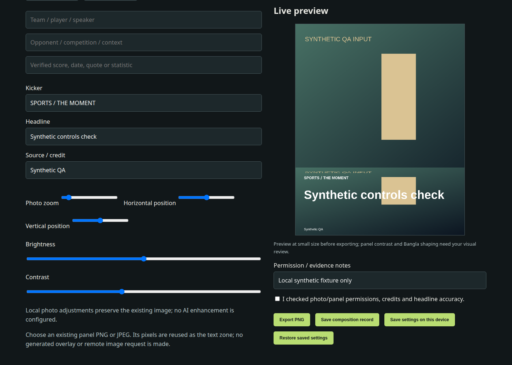

Tools for media, development and everyday operations.
A project portfolio covering assisted content production, AI development workspaces and restaurant software. Built through an AI-assisted development workflow; individual contributions and production experience are discussed during review.
A synthetic folder was selected in the laptop browser, imported to a PC copy and downloaded as a ZIP.
Runtime observed
2026-10-04 · RestoSIP
Project capability review
Desktop packaging, stock and point-of-sale modules identified in the existing project.
Source inspected
MediaForge demonstration
Existing poster editor screenshot using synthetic input. This is an internal demonstration, not a customer campaign.

Full commercial source stays private. These public-facing pages contain curated descriptions and demonstration material, not credentials, client data, private conversations or live task logs. Prepared 5 October 2026; publication pending.